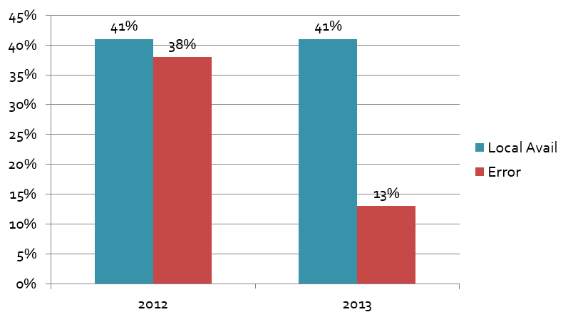

How much do availability studies increase full text success?
Sanjeet Mann
Arts & Electronic Resources Librarian, University of Redlands
SCELC Research Day
March 4, 2014
Availability studies
Replicate the steps that library users take from a citation to full text (or an error)
Electronic resource infrastructure

Example

Questions you can answer
- Can users get to full text?
- How often do they get errors? What kind of errors?
- Should you be satisfied with your knowledge base (kb) vendor?
- Do you have enough full text in your collection?
- How often do your users need ILL?
- Are you teaching users what they need to know to successfully access e-resources?
Availability studies
4 searches x 10 disciplines x 10 results = 400 item sample
(estimates overall population with 98% confidence, +/- 5% error)

Datasets
2012 dataset at (broken link)
2013 dataset at (broken link)
Results

Z test results

Troubleshooting proxy errors
Troubleshooting source errors
Troubleshooting KB errors
Troubleshooting resolver errors
Troubleshooting target errors
Troubleshooting ILLIAD errors

Item types in the sample

Error rate by discipline